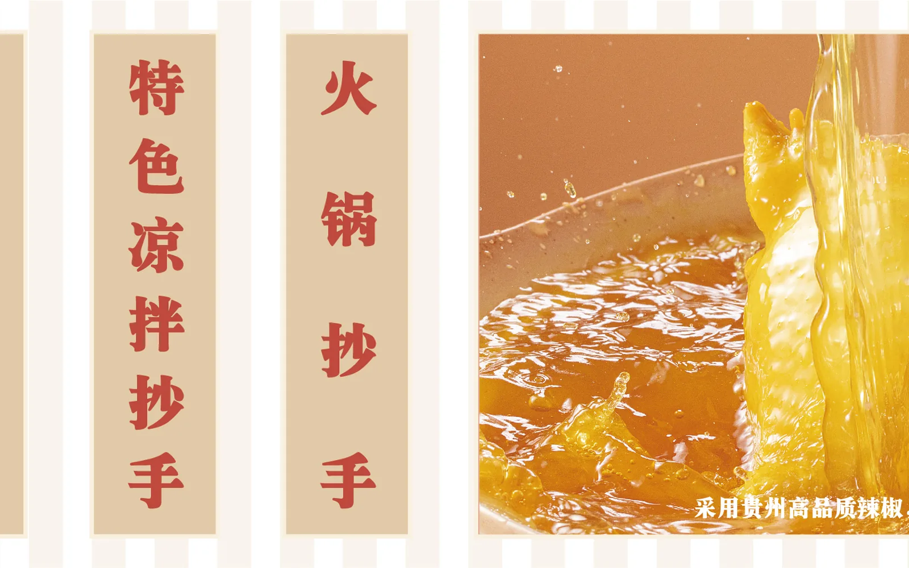

成都建设巷 · 现包热抄手
麻得清香，辣得过瘾，酸得开胃，汤也要炖得鲜。今天想吃哪一味，八二都给你热腾腾地端上来。
PEPPERWONTONCHENGDU
Choose Your Flavor
西南味不只有辣。清香的麻、利落的酸、温厚的汤，每一种都有自己的脾气。
干香辣 · 焦香、鲜辣、拌开更香
不靠厚重汤底，干海椒的香气牢牢裹住每一只抄手。
椒麻鲜 · 清香、微麻、入口鲜爽
藤椒的清香先钻进鼻子，随后是一阵轻盈的麻。
酸辣味 · 酸香、鲜辣、利落开胃
酸得清醒，辣得舒服，适合想吃一碗痛快的时候。
暖汤味 · 温厚、浓鲜、热汤暖胃
番茄、牛腩、鸡汤与菌菇，把抄手变成一顿暖和的饭。
Freshly Wrapped
面皮的软韧、馅心的鲜香、汤底的热气，都在明档里看得见。包好一只，煮好一碗，香气就是最直接的招呼。
Born in Chengdu
这里有街巷的热闹，也有一日三餐的认真。八二想做的很简单：把一碗抄手做出更多西南风味，让熟悉的食物一直有新鲜感。

Bite Notes
藤椒的清香、酸菜的爽口、菌汤的温润，都能成为一碗抄手的主角。
刚出锅时，皮、馅、汤底的口感最有层次。
Bring It To Your City

 干香辣
干香辣 椒麻鲜
椒麻鲜 酸辣味
酸辣味 暖汤味
暖汤味 每天现包 · 趁热上桌每天现包 · 趁热上桌
每天现包 · 趁热上桌每天现包 · 趁热上桌